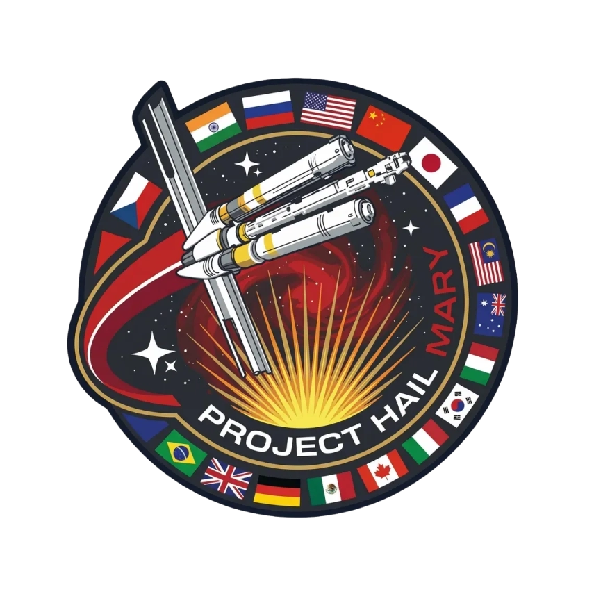

active // flight
Рогалик в духе Factorio: забеги, автоматизация и производственные цепочки, только с процедурной генерацией. Работает на собственном движке.
mission // personal blin4ik
SOL → TAU CETI
blin4ik@hailmary:~$ whoami
blin4ik@hailmary:~$ cat role.txt
blin4ik@hailmary:~$ cat /etc/motd
Пишу на Rust и C, три года занимаюсь графикой и движками. Делаю собственный движок на wgpu и winit, а на нём — CRISP, рогалик в духе Factorio.

01 about
Оператор на связи. Ниже — краткая сводка и рабочее досье.
Последние три года занимаюсь низкоуровневой разработкой: Rust, C и C++, графика на Vulkan и собственные игровые движки. Сейчас пишу движок на wgpu и winit — от окна и рендер-пайплайна до игрового цикла — и делаю на нём CRISP, рогалик в духе Factorio.
Учусь в ВятГУ на «Прикладной математике и информатике». Разбираюсь в программировании под микроконтроллеры на C и Rust, писал расширения для Godot и приложения на Qt. Люблю предсказуемый код, честные бенчмарки и проекты, где всё работает без лишних слоёв.
operator dossier B4-07
02 projects
Игра, движок под неё и инструменты вокруг.
active // flight
Рогалик в духе Factorio: забеги, автоматизация и производственные цепочки, только с процедурной генерацией. Работает на собственном движке.
core // stable
Узкоспециализированный движок под CRISP: окно и ввод на winit, рендер на wgpu, свой игровой цикл, сцены и система ресурсов. Минимум абстракций, максимум контроля.
aux // linked
Расширения для Godot на C++ и Qt: собственные узлы, инструменты редактора и обвязка для GDScript. Иногда проще написать плагин, чем мириться с ограничениями движка.
ground // tested
Работа с железом на C и Rust: периферия, прерывания, тайминги. Небольшие прошивки и эксперименты, где видно каждый байт и такт.
03 skills
Бортовые системы, которые уже проходят проверку.
04 contact
Открытый канал для разговоров про Rust, движки и геймдев.
blin4ik@hailmary:~$ mail -s "привет" blin4ik
Открыт к разговорам про Rust, движки и геймдев, а также к интересным задачам на C и C++. Пишите — отвечаю в течение дня.
channel 1420.405 MHz // hydrogen line · open
hello@example.com